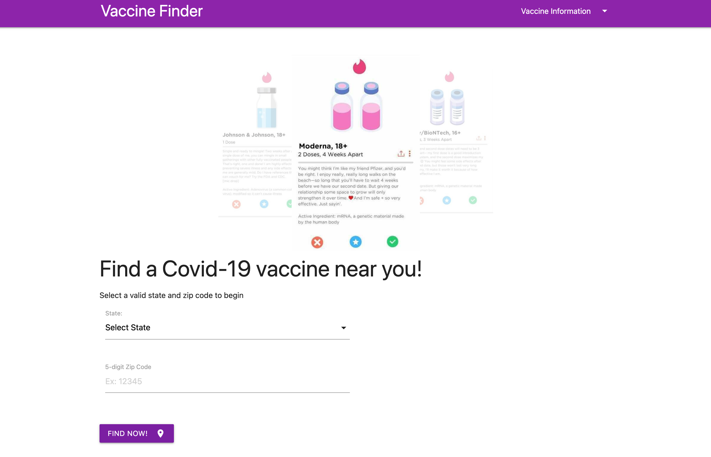
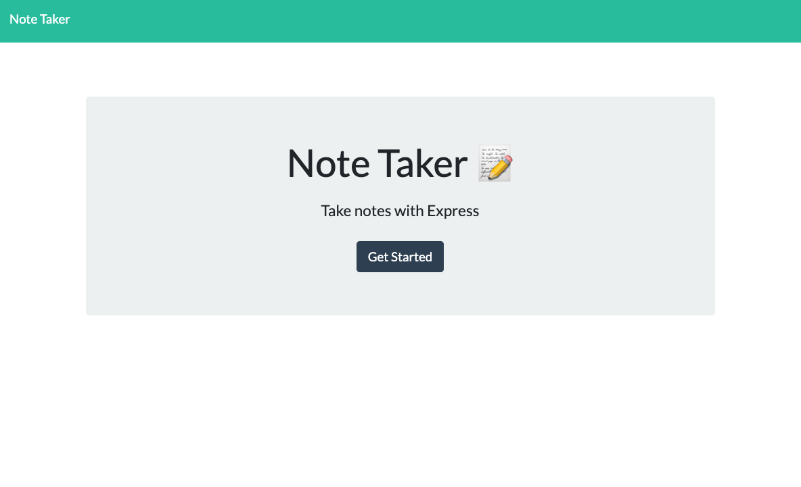
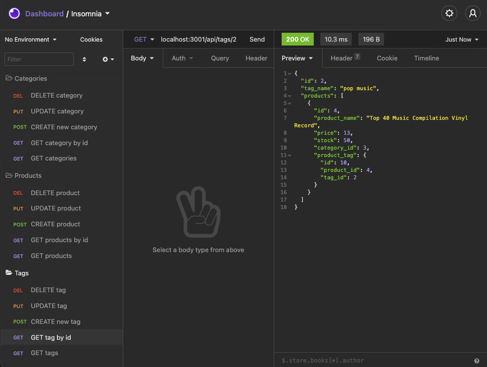

Oui Circle Community Bulletein is an online community board where neighbors can create an account to post, view, or comment on neighborhood events.

Covid-19 Vaccine Finder
Vaccine Finder is a location based Covid-19 vaccine administration locator. Users can see which type of vaccine is offered, make or view appointments for the vaccine, and can be directed directly to the location offering the vaccine.

Express Note Taker
Note taker is an express.js application for note taking. Users can create, edit, and delete notes with smooth functionality and ease.

Express E-Commerce Inventory Tracker
E-commerce Inventory Tracker is an express.js application using the MySQL database with sequelize for an online business to keep track of inventory by product, product type, tags, and tag id's.